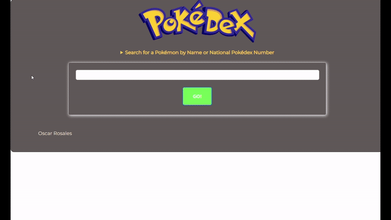

ABOUT ME
Welcome to my portfolio! My name is Oscar Rosales, and I am
currently studying Business Information Technology in my
final academic term. I have a passion for web and software
development as I love the feeling of satisfaction when
completing a project! I am eager to learning and adapting to new
technology!
I'm currently in search for a co-op or internship for my work-integrated
learning term and I'm open to exploring any opportunities
related to my field of study. I hope to grow as an IT professional, being
able to provide effective, secure, and scalable business solutions.
A few unrelated facts about me:
• I'm very passionate about cars, Pokémon, and anime
DOWNLOAD RESUME
MY SKILLS
TECHNICAL SKILLS
- Python
- C#
- Web Development
- Version Control
- Database Management
- Network Computing
- AWS
- UX/UI Design
SOFT SKILLS
- Skilled in team collaboration and cooperation
- Strong time management and organizational skills
- Clear and effective verbal and written communication
- Analytical problem-solving capabilities
- Enthusiastic, which a proactive approach to learning and growth
- Detail-oriented and committed to producing quality work
PROJECTS
SPARK DETAILING

I created a CRUD-based Content Management System using PHP for my fictional client,
Spark Detailing, a company that specializes in automotive detailing. They required
a website which will showcase their past work, products they sell, various detailing
services they offer, and customer testimonials.
Pokédex on Rails

I developed this Pokédex as a project driven by my passion for Pokémon. It allows
users to search for a Pokémon by it's name or through the homepage, and will
display the Pokémon's information such as it's name, species, type, abilities and base stats.
The app features hierarchical collection navigation, so the user can navigate between
different show pages.
This project was created with Ruby on Rails, and I seeded the database using PokéAPI v2.
For styling I used Bulma CSS framework, to ensure mobile responsiveness and making use
of the grid system.
Project repository can be viewed
here
Oscar's Weather Network

I built a simple weather app as a personal project to hone my skills with the React library. Using WeatherAPI, the app shows real-time weather data based on a city entered by the user.